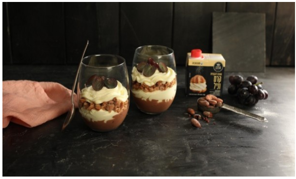

מאפי פילו דל קלוריות עם גבינות וקינמון
מצרכים:
לבצק:
⅔ חבילת בצק פילו "מעדנות"
מופשר על פי ההוראות שעל האריזה
ספריי שמן (אפשר להחליף בחמאה מומסת)
למלית:
500 גרם גבינת כנען "השף הלבן"
¾ כוס סוכר לבן
ביצה בגודל L
כפית וחצי אבקת קינמון
כפית תמצית וניל
לציפוי:
ביצה טרופה

אופן הכנה:
01. מחממים תנור לחום של º180 ומרפדים תבנית תנור בנייר אפייה.
02. להכנת המלית, טורפים היטב את כל המרכיבים לתערובת אחידה.
03. על נייר אפייה פורסים עלה פילו ומרססים חצי ממנו (לרוחב) בשכבה דקה ואחידה של ספריי שמן.
04. בעזרת גלגלת פיצה/סכין חדה, פורסים את עלה הפילו לארבעה מלבנים. בעזרת שק זילוף/שתי כפיותמניחים מעט ממלית הגבינה בקצה הקצר יותר של המלבן ומגלגלים לצורת סיגר.
05. מעבירים לתבנית וממשיכים כך עם שאר העלים. מברישים את העלים בביצה טרופה ואופים במשך 20דקות, או עד שהמאפים זהובים.
מוס עם פירות וקראמבל
מצרכים:
4 כפות פולי קקאו
1 כוס ענבים כהים חצויים
250 גרם גבינת מסקרפונה קולקשן
לקראמבל:
100 גרם חמאת "תנובה" מומסת
4/3 כוס קמח
1 כפית קינמון
4 כפות סוכר
100 גרם שוקולד מריר
100 גרם שוקולד לבן
2 מכלי שמנת להקצפת קרם וניל "השף הלבן"

אופן הכנה:
01. מערבבים בקערה בעזרת מזלג את מרכיבי הקראמבל ואופים בתבנית כ- 20 דקות בתנור שחומם מראשל- 170 מעלות.
02. מניחים קוביות שוקולד בשתי קעריות נפרדות
03. בכל קערית מניחים חצי מקרם הווניל וממיסים על באן מארי או במיקרוגל, מכניסים למקרר לשעה.
04. שופכים מחצית מהמיכל השני בכל קערה ומקציפים, מקפלים לכל קערה מחצית מהמסקרפונה.
מוס עם פירות וקראמבל – קינוח שכבות אישי
05. ומעבירים לשקית זילוף
06. בכל כוס הגשה מניחים קרם שוקולד ומעל קראמבל מעל מזלפים קרם וניל, מניחים קרמבל, פירות ופוליקקאו
07. שומרים בקירור עד להגשה.
קעריות גבינה ופירות דלות קלוריות
מצרכים:
3 דפי פילו "מעדנות"
מופשרים על פי ההוראות שעל האריזה
ספריי שמן (אפשר להחליף בחמאה מומסת לגרסה מעט יותר מושחתת)
למלית:
250 גרם גבינה לבנה %3 "תנובה"
1 גביע שמנת חמוצה %9 "תנובה"
2 כפות אינסטנט פודינג וניל
כף אבקת סוכר
לקישוט:
פירות טריים
חתוכים

אופן הכנה:
01. מחממים תנור לחום של º180 ומרפדים תבנית תנור בנייר אפייה.
02. להכנת המלית, טורפים היטב את כל המרכיבים לתערובת אחידה. שומרים במקרר עד להרכבה.
03. על נייר אפייה פורסים עלה פילו ומרססים בשכבה דקה ואחידה של ספריי שמן. מרססים את העלה השניבעלה פילו ומניחים מעליו את העלה האחרון. בעזרת סכין חדה/ גלגלת פיצה, חותכים את עלי הפילו לתשעהמלבנים (X33)
קערות גבינה ופירות דלות קלוריות – קינוח קל ומרשים
04. מרססים עם ספריי שמן תבנית שקעים ומניחים את מלבני הפילו בתוך השקעים.
05. אופים במשך 20 דקות, או עד שהמאפים זהובים.
06. לפני ההגשה ממלאים כל קערית בקרם הגבינה ומסדרים מעל פירות טריים